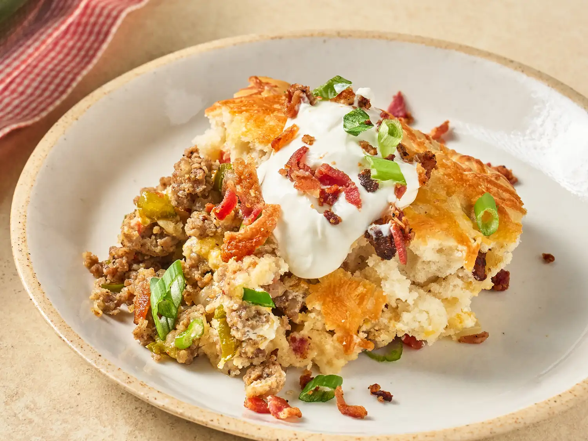

Cowboy Breakfast Skillet

Description
This cowboy breakfast skillet, with sausage and bacon, plenty of Mexican-blend cheese, and a biscuit topping, is a 1-pot breakfast that is prefect for a casual crowd.
Ingrediants
- 2 pounds breakfast sausage, mild or spicy
- 1/2 yellow onion, chopped
- 1/2 green bell pepper, chopped
- 1 jalapeno, seeded and diced
- 1/2 teaspoon kosher salt
- 1 cup sour cream, plus more for garnish
- 3 cups Mexican blend cheese
- 2 cups baking mix, such as Bisquick®
- 1 1/4 cups whole milk
- 4 slices bacon, cooked and crumbled, or more to taste
- 1 tablespoons vegetable oil
- 1 (10 ounce) can fire roasted diced tomatoes with Hatch green chiles, drained
- 1/2 cup chopped cilantro or green onions, for garnish
Steps
- Preheat the oven to 350 degrees F (180 degrees C).
- Heat a 12-inch cast iron skillet over medium-high heat; cook breakfast sausage, stirring occasionally until browned, about 5 minutes. Drain excess grease.
- Return sausage to skillet and add onion, bell pepper, jalapeno, and salt and continue cooking until peppers begin to soften, about 4 minutes. Remove from heat, drain any excess liquid, and set aside.
- Add sour cream and 2 cups shredded cheese to a bowl; stir until well combined. Set aside.
- Whisk baking mix, milk, and oil together in a separate bowl until smooth. Add crumbled bacon and mix well; set aside.
- Sprinkle tomatoes evenly over sausage. Carefully spoon cheese mixture over tomatoes. Pour baking mix mixture on top and sprinkle with remaining cheese.
- Bake uncovered in the preheated oven until golden brown, about 30 minutes.
- Let skillet rest for 10 minutes before serving. Garnish with sour cream and cilantro or green onions.
Home